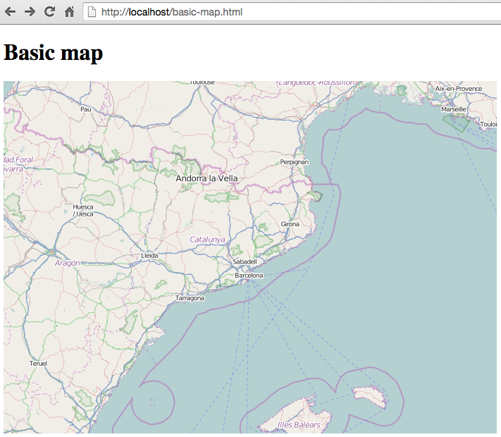

OpenLayers Quickstart¶
This Quick Start describes some basic steps required to start working with OpenLayers: creating a basic map, adding raster and vector layers and styling features.
OpenLayers makes it easy to put a dynamic map in any web page. It can display map tiles, vector data and markers loaded from any source. OpenLayers has been developed to further the use of geographic information of all kinds. It is completely free, Open Source JavaScript, released under the 2-clause BSD License (also known as the FreeBSD).
Core concepts¶
Before we start working with OpenLayers it helps to understand OpenLayers core concepts:
- Map
The map is the core component of OpenLayers. For a map to render, a view, one or more layers, and a target container are needed.
- View
The view determines how the map is rendered. It is used to set the resolution, the center location, etc. It is like a camera through which we look at the map’s content.
- Layers
Layers can be added to the map in a stacked order. Layers can be either raster layers (images), or vector layers (points/lines/polygons).
- Source
Each layer has a source, which knows how to load the layer content. In the case of vector layers, its source reads vector data using a format class (for example GeoJSON or KML) and provides the layer with a set of features.
- Features
Features represent real world things and can be rendered using different geometries (like point, line or polygon) using a given style, which determines its look (line thinkness, fill color, etc).
Create a basic map¶
Create a file in e.g. /home/user/ called basic-map.html , and copy the following content into the file.
<!DOCTYPE html>
<html lang="en">
<head>
<title>Basic map</title>
<meta charset="UTF-8">
<meta name="viewport" content="width=device-width">
<!-- OpenLayers CSS -->
<link rel="stylesheet" href="http://localhost/openlayers/dist/ol.css" type="text/css">
<!-- Custom styles -->
<style>
#map {
width: 100%;
height: 500px;
}
</style>
</head>
<body>
<h1>Basic map</h1>
<div id="map"></div>
<!-- OpenLayers JS-->
<script src="http://localhost/openlayers/dist/ol.js" type="text/javascript"></script>
<!-- App code -->
<script>
var map = new ol.Map({
target: 'map',
layers: [
new ol.layer.Tile({
source: new ol.source.OSM()
})
],
view: new ol.View({
center: ol.proj.fromLonLat([2.1833, 41.3833]),
zoom: 6
})
});
</script>
</body>
</html>
Now try opening basic-map.html from a web browser using File->Open File. You should see the following:
{kind=link}
Note:
The code follows the best practice of loading JavaScipt code at the end of the html file.
An OpenLayers map needs to be attached to a HTML DOM element, so we have created a
<div>element identified by the map id.Maps are represented by the
ol.Mapclass. We specify the DOM element to render the map into using the target property.OpenLayers allows map rendering using two different mechanisms: Canvas and WebGL. The default renderer is canvas.
A map shows data contained within layers, so we have created a tiled layer, represented by the
ol.layer.Tileclass, that loads content from the OpenStreetMap project, using theol.source.OSMsource class.Finally, we set the initial position of the camera using the
ol.Viewclass, set the initial zoom level and center location.
Add raster layers¶
The most used raster layers are the tiled layers, provided by the likes of
OpenStreetMap, Stamen, Bing, etc. Tiled layers are represented by the
ol.layer.Tile class and must use a source that knows how to load tiles from
a given provider, like ol.source.OSM or ol.source.Stamen:
var osm = new ol.layer.Tile({
source: new ol.source.OSM()
});
var stamen = new ol.layer.Tile({
source: new ol.source.Stamen({
layer: 'watercolor'
})
});
Layers can be added to the map in two ways:
When constructing the
ol.Map, use thelayersproperty:var map = new ol.Map({ ... layers: [osm, stamen] ... });
Add them manually with the
map.addLayer()method:map.addLayer(osm); map.addLayer(stamen);
Add vector layers¶
Vector layers are represented by the ol.layer.Vector class and must use a
source suitable for reading the vector format, like ol.source.GeoJSON,
ol.source.KML or ol.source.TopoJSON.
var vectorLayer = new ol.layer.Vector({
source: new ol.source.GeoJSON({
url: 'url_to_geojson_file'
})
});
// Add Vector layer to map
map.addLayer(vectorLayer);
{kind=link}
Note, in the previous code we must change the url_to_file to point to a
valid GeoJSON file placed in our server.
Note that Javascript security will prevent sourcing of datasets from an external URL on a different domain / port (a.k.a. same-origin policy).
Features can also be created manually. In this case we need to create a geometry that represents the feature:
// Geometries
var point = new ol.geom.Point(
ol.proj.transform([3,50], 'EPSG:4326', 'EPSG:3857')
);
var circle = new ol.geom.Circle(
ol.proj.transform([2.1833, 41.3833], 'EPSG:4326', 'EPSG:3857'),
1000000
);
// Features
var pointFeature = new ol.Feature(point);
var circleFeature = new ol.Feature(circle);
// Source
var vectorSource = new ol.source.Vector({
projection: 'EPSG:4326'
});
vectorSource.addFeatures([pointFeature, circleFeature]);
// Vector layer
var vectorLayer = new ol.layer.Vector({
source: vectorSource
});
// Add Vector layer to map
map.addLayer(vectorLayer);
Apply style to features¶
Features within vector layers can be styled. The style is determined by a combination of fill, stroke, text and image, which are all optional. In addition, a style can be applied to a layer, which determines the style of all contained features, or to an individual feature.
A style is represented by the ol.style.Style class which has properties to set the fill, stroke, text and image to be applied. The next example shows the World’s administrative limits dataset styled to use a green fill and stroke:
{kind=link}
var limitsLayer = new ol.layer.Vector({
source: new ol.source.Vector({
url: 'data/world_limits.json',
format: new ol.format.TopoJSON(),
projection: 'EPSG:3857'
}),
style: new ol.style.Style({
fill: new ol.style.Fill({
color: 'rgba(55, 155, 55, 0.3)'
}),
stroke: new ol.style.Stroke({
color: 'rgba(55, 155, 55, 0.8)',
width: 1
}),
image: new ol.style.Circle({
radius: 7,
fill: new ol.style.Fill({
color: 'rgba(55, 155, 55, 0.5)',
})
})
})
});
In the code, we have loaded a TopoJSON file and styled it through the style property.
We have set a fill and stroke, required for lines and polygons, and an
image (in this case a circle) used for point features.
Work with events¶
Most of the components, like map, layers or controls, trigger events to notify changes. For example we can be notified each time the mouse is moved over the map, or when a feature is added to a vector layer, etc.
Events can be easily registered on an object with the on() method and unregistered with un().
The following code registers an event on a map instance, and will be notified each time the pointer is moved. Within the callback function we obtain the pointer coordinates and print in the browser console in two different projections.
map.on('pointermove', function(event) {
var coord3857 = event.coordinate;
var coord4326 = ol.proj.transform(coord3857, 'EPSG:3857', 'EPSG:4326');
console.log(coord3857, coord4326);
});
What next?¶
Sometimes the quickest way to work out how OpenLayers works is to look at examples and their source code. You can find more OpenLayers information here: